Voľné miesta vo vlakoch
Posledné meranie: 31.10.2026 14:33 · stiahnuť dáta (CSV)
Súhrn po dňoch
| Deň | Trasa | Meraní | Vlakov | Čas meraní |
|---|---|---|---|---|
| sobota 31.10.2026 | Bratislava → Vrútky | 43 | 8 | 00:21-11:02 |
| sobota 31.10.2026 | Vrútky → Bratislava | 36 | 7 | 02:42-11:02 |
| sobota 31.10.2026 | Bratislava → Košice | 43 | 8 | 00:23-11:03 |
| sobota 31.10.2026 | Košice → Bratislava | 35 | 9 | 00:34-14:33 |
| piatok 30.10.2026 | Bratislava → Vrútky | 68 | 16 | 00:31-23:31 |
| piatok 30.10.2026 | Vrútky → Bratislava | 56 | 14 | 02:52-21:02 |
| piatok 30.10.2026 | Bratislava → Košice | 52 | 12 | 00:22-23:12 |
| piatok 30.10.2026 | Košice → Bratislava | 41 | 12 | 00:23-17:54 |
| štvrtok 29.10.2026 | Bratislava → Vrútky | 84 | 14 | 00:01-23:31 |
| štvrtok 29.10.2026 | Vrútky → Bratislava | 75 | 15 | 02:42-21:02 |
| štvrtok 29.10.2026 | Bratislava → Košice | 76 | 13 | 00:03-23:22 |
| štvrtok 29.10.2026 | Košice → Bratislava | 63 | 14 | 00:04-17:43 |
| streda 28.10.2026 | Bratislava → Vrútky | 148 | 16 | 00:03-23:51 |
| streda 28.10.2026 | Vrútky → Bratislava | 65 | 13 | 08:02-20:22 |
| streda 28.10.2026 | Bratislava → Košice | 66 | 12 | 07:46-23:52 |
| streda 28.10.2026 | Košice → Bratislava | 53 | 11 | 07:47-23:53 |
| utorok 27.10.2026 | Bratislava → Vrútky | 99 | 11 | 00:01-23:59 |
| pondelok 26.10.2026 | Bratislava → Vrútky | 88 | 14 | 00:06-23:50 |
| nedeľa 25.10.2026 | Bratislava → Vrútky | 101 | 15 | 00:01-23:56 |
| sobota 24.10.2026 | Bratislava → Vrútky | 98 | 14 | 00:10-23:50 |
| piatok 23.10.2026 | Bratislava → Vrútky | 64 | 13 | 07:25-23:49 |
| štvrtok 22.10.2026 | Bratislava → Vrútky | 80 | 11 | 00:08-16:10 |
| streda 21.10.2026 | Bratislava → Vrútky | 96 | 15 | 00:10-23:58 |
| utorok 20.10.2026 | Bratislava → Vrútky | 34 | 7 | 13:55-23:50 |
Štatistiky
Bratislava → Vrútky
Typický priebeh obsadenosti pred odchodom
Sivé čiary sú jednotlivé vlaky, červená čiara je medián. Ukazuje, koľko hodín pred odchodom sa vlaky bežne plnia. Obsadenosť sa počíta z odhadnutej kapacity a čas odchodu je odhad z časov meraní.

| Pred odchodom | Medián obsadenosti | Vlakov v mediáne |
|---|---|---|
| 1 h | 43 % | 131 |
| 0.5 h | 43 % | 130 |
Plnenie vozňov
Priemerná obsadenosť každého vozňa pri poslednom meraní pred odchodom. Tmavšia farba znamená plnší vozeň. Posledný riadok je priemer cez všetky vlaky.

| vozen | Vlak | Vůz 2 | Vůz 3 | Vůz 4 | Vůz 5 | Vůz 6 | Vůz 7 | Vůz 8 | Vůz 9 | Vůz 10 | Vůz 11 |
|---|---|---|---|---|---|---|---|---|---|---|---|
| Ex 10627 | 26 | 28 | 29 | 26 | 27 | 36 | 34 | 33 | 29 | 37 | |
| Ex 603 | <NA> | 39 | 39 | 17 | 19 | 16 | 13 | 4 | <NA> | <NA> | |
| Ex 607 | <NA> | 62 | 66 | 42 | 41 | 41 | 37 | 24 | 0 | <NA> | |
| Ex 609 | <NA> | 71 | 66 | 55 | 43 | 31 | 41 | 27 | 9 | <NA> | |
| Ex 611 | <NA> | 75 | 76 | 56 | 54 | 52 | 59 | 39 | 0 | <NA> | |
| Ex 613 | <NA> | 74 | 68 | 71 | 57 | 53 | 58 | 44 | 0 | <NA> | |
| Ex 615 | <NA> | 77 | 77 | 72 | 54 | 50 | 54 | 53 | <NA> | <NA> | |
| Ex 617 | <NA> | 76 | 72 | 61 | 44 | 41 | 53 | 40 | <NA> | <NA> | |
| Ex 619 | <NA> | 82 | 78 | 70 | 52 | 45 | 55 | 50 | 13 | <NA> | |
| Ex 621 | <NA> | 81 | 78 | 72 | 63 | 54 | 63 | 59 | 24 | <NA> | |
| Ex 623 | <NA> | 82 | 80 | 72 | 58 | 51 | 64 | 54 | 88 | <NA> | |
| Ex 627 | <NA> | 71 | 74 | 72 | 76 | 76 | 81 | 75 | 50 | <NA> | |
| Ex 629 | <NA> | 83 | 81 | 71 | 65 | 49 | 63 | 54 | <NA> | <NA> | |
| Ex 631 | <NA> | 73 | 71 | 56 | 47 | 42 | 46 | 39 | <NA> | <NA> | |
| Ex 651 | <NA> | 33 | 32 | 21 | 7 | 11 | 5 | 3 | <NA> | <NA> | |
| Ex 653 | <NA> | 22 | 22 | 12 | 5 | 2 | 2 | 7 | <NA> | <NA> | |
| neznámy vlak | <NA> | 95 | 95 | 88 | 91 | 88 | 86 | 82 | <NA> | <NA> | |
| Všetky vlaky | 26 | 67 | 65 | 55 | 45 | 41 | 47 | 39 | 27 | 37 |
Ktoré miesta sa obsadzujú prvé
Skorosť obsadenia: 100 % znamená, že miesto bolo obsadené už pri prvom meraní, 0 % že sa neobsadilo vôbec. Priemer cez všetky vlaky a dni pre dané číslo miesta vo vozni. Pri málo dňoch dát je výsledok orientačný.

| Kategória | Vozeň | Miesto | Skorosť obsadenia (%) | Pozorovaní (dní) |
|---|---|---|---|---|
| najskôr obsadzované | Vůz 4 | 61 | 93 | 40 |
| najskôr obsadzované | Vůz 4 | 62 | 89 | 40 |
| najskôr obsadzované | Vůz 4 | 66 | 88 | 30 |
| najskôr obsadzované | Vůz 3 | 82 | 85 | 59 |
| najskôr obsadzované | Vůz 4 | 96 | 83 | 75 |
| najskôr obsadzované | Vůz 3 | 92 | 83 | 59 |
| najskôr obsadzované | Vůz 5 | 45 | 82 | 80 |
| najskôr obsadzované | Vůz 3 | 66 | 82 | 39 |
| najskôr obsadzované | Vůz 4 | 76 | 81 | 50 |
| najskôr obsadzované | Vůz 3 | 91 | 80 | 86 |
| najneskôr obsadzované | Vůz 10 | 12 | 0 | 7 |
| najneskôr obsadzované | Vůz 10 | 23 | 0 | 6 |
| najneskôr obsadzované | Vůz 10 | 24 | 0 | 6 |
| najneskôr obsadzované | Vůz 10 | 32 | 0 | 6 |
| najneskôr obsadzované | Vůz 10 | 33 | 0 | 6 |
| najneskôr obsadzované | Vůz 10 | 34 | 0 | 6 |
| najneskôr obsadzované | Vůz 10 | 43 | 0 | 6 |
| najneskôr obsadzované | Vůz 10 | 51 | 0 | 6 |
| najneskôr obsadzované | Vůz 10 | 54 | 0 | 6 |
| najneskôr obsadzované | Vůz 10 | 61 | 0 | 6 |
Predaj miest podľa hodiny dňa
Priemerný počet miest, ktoré sa za hodinu obsadili alebo uvoľnili vo všetkých vozňoch vlaku, podľa porovnania dvoch po sebe idúcich meraní. Hodiny s menej než pol hodinou sledovania sa nezobrazujú.

| Hodina | Obsadené miest/hod. | Uvoľnené miest/hod. | Sledované (hod.) |
|---|---|---|---|
| 00:00 | 1.8 | 0.5 | 7.8 |
| 01:00 | 1.8 | 0.5 | 8.7 |
| 02:00 | 1.6 | 0.6 | 8.8 |
| 03:00 | 9.6 | 1.5 | 9.2 |
| 04:00 | 14.8 | 4.0 | 1.8 |
| 05:00 | 19.5 | 2.3 | 5.1 |
| 06:00 | 18.4 | 2.0 | 6.5 |
| 07:00 | 26.8 | 2.4 | 6.8 |
| 08:00 | 38.0 | 5.0 | 7.2 |
| 09:00 | 41.6 | 4.6 | 6.8 |
| 10:00 | 41.0 | 5.0 | 7.2 |
| 11:00 | 52.0 | 3.7 | 6.2 |
| 12:00 | 45.6 | 3.6 | 7.2 |
| 13:00 | 37.3 | 3.5 | 8.1 |
| 14:00 | 37.2 | 1.8 | 1.6 |
| 15:00 | 61.9 | 5.3 | 5.7 |
| 16:00 | 57.7 | 2.8 | 7.5 |
| 17:00 | 50.2 | 5.2 | 7.9 |
| 18:00 | 36.7 | 3.7 | 6.5 |
| 19:00 | 22.9 | 2.2 | 7.2 |
| 20:00 | 25.9 | 2.9 | 1.7 |
| 23:00 | 1.9 | 0.6 | 3.2 |
Uvoľnené miesta (storná)
Miesta, ktoré boli v jednom meraní obsadené a v ďalšom sa znovu objavili ako voľné. Celkom zaznamenaných: 397 miest v 306 prípadoch. Nižšie je posledných 25.
| Čas | Vlak | Vozeň | Uvoľnené miesta |
|---|---|---|---|
| 31.10. 09:02 | Ex 613 | Vůz 4 | 63 |
| 31.10. 08:52 | Ex 613 | Vůz 5 | 86 |
| 31.10. 07:31 | Ex 611 | Vůz 4 | 85 |
| 31.10. 07:11 | Ex 609 | Vůz 8 | 91 |
| 31.10. 06:12 | Ex 607 | Vůz 3 | 68 |
| 31.10. 06:12 | Ex 607 | Vůz 7 | 55 |
| 31.10. 05:41 | Ex 607 | Vůz 6 | 91 |
| 31.10. 04:01 | Ex 603 | Vůz 4 | 41 |
| 31.10. 03:32 | Ex 603 | Vůz 4 | 41 |
| 31.10. 00:41 | Ex 603 | Vůz 4 | 81 |
| 30.10. 20:11 | Ex 653 | Vůz 3 | 31 |
| 30.10. 19:52 | Ex 653 | Vůz 4 | 45, 46 |
| 30.10. 19:12 | Ex 651 | Vůz 3 | 46 |
| 30.10. 17:51 | Ex 631 | Vůz 9 | 96 |
| 30.10. 17:51 | Ex 631 | Vůz 4 | 105 |
| 30.10. 17:31 | Ex 631 | Vůz 3 | 41, 84 |
| 30.10. 17:01 | Ex 629 | Vůz 6 | 15 |
| 30.10. 12:52 | Ex 621 | Vůz 7 | 51, 53 |
| 30.10. 12:41 | Ex 621 | Vůz 6 | 82, 102 |
| 30.10. 12:32 | Ex 621 | Vůz 4 | 81 |
| 30.10. 11:51 | Ex 619 | Vůz 9 | 62 |
| 30.10. 11:51 | Ex 619 | Vůz 4 | 15 |
| 30.10. 10:42 | Ex 617 | Vůz 9 | 35 |
| 30.10. 10:42 | Ex 617 | Vůz 8 | 15 |
| 30.10. 10:42 | Ex 617 | Vůz 3 | 105 |
Vypredané vlaky
Vlak sa považuje za vypredaný, keď obsadenosť dosiahne 98 %. Vypredaných vlakov v dátach: 1 z 152.
| Deň | Vlak | Max. obsadenosť | Vypredaný od | Hodín pred odchodom (odhad) |
|---|---|---|---|---|
| 31.10.2026 | Ex 603 | 27 % | - | - |
| 31.10.2026 | Ex 607 | 35 % | - | - |
| 31.10.2026 | Ex 609 | 43 % | - | - |
| 31.10.2026 | Ex 611 | 51 % | - | - |
| 31.10.2026 | Ex 613 | 52 % | - | - |
| 31.10.2026 | Ex 615 | 57 % | - | - |
| 30.10.2026 | Ex 603 | 45 % | - | - |
| 30.10.2026 | Ex 607 | 63 % | - | - |
| 30.10.2026 | Ex 609 | 73 % | - | - |
| 30.10.2026 | Ex 611 | 90 % | - | - |
| 30.10.2026 | Ex 613 | 92 % | - | - |
| 30.10.2026 | Ex 615 | 92 % | - | - |
| 30.10.2026 | Ex 617 | 71 % | - | - |
| 30.10.2026 | Ex 619 | 63 % | - | - |
| 30.10.2026 | Ex 621 | 71 % | - | - |
| 30.10.2026 | Ex 623 | 86 % | - | - |
| 30.10.2026 | Ex 627 | 93 % | - | - |
| 30.10.2026 | Ex 629 | 95 % | - | - |
| 30.10.2026 | Ex 631 | 70 % | - | - |
| 30.10.2026 | Ex 651 | 20 % | - | - |
| 30.10.2026 | Ex 653 | 13 % | - | - |
| 30.10.2026 | neznámy vlak | 89 % | - | - |
| 29.10.2026 | Ex 10627 | 52 % | - | - |
| 29.10.2026 | Ex 603 | 38 % | - | - |
| 29.10.2026 | Ex 607 | 85 % | - | - |
| 29.10.2026 | Ex 609 | 90 % | - | - |
| 29.10.2026 | Ex 611 | 95 % | - | - |
| 29.10.2026 | Ex 613 | 97 % | - | - |
| 29.10.2026 | Ex 615 | 94 % | - | - |
| 29.10.2026 | Ex 619 | 95 % | - | - |
| 29.10.2026 | Ex 621 | 96 % | - | - |
| 29.10.2026 | Ex 623 | 94 % | - | - |
| 29.10.2026 | Ex 627 | 94 % | - | - |
| 29.10.2026 | Ex 629 | 96 % | - | - |
| 29.10.2026 | Ex 631 | 94 % | - | - |
| 29.10.2026 | Ex 653 | 13 % | - | - |
| 28.10.2026 | Ex 10627 | 9 % | - | - |
| 28.10.2026 | Ex 603 | 27 % | - | - |
| 28.10.2026 | Ex 607 | 26 % | - | - |
| 28.10.2026 | Ex 609 | 35 % | - | - |
| 28.10.2026 | Ex 611 | 48 % | - | - |
| 28.10.2026 | Ex 613 | 55 % | - | - |
| 28.10.2026 | Ex 615 | 58 % | - | - |
| 28.10.2026 | Ex 617 | 64 % | - | - |
| 28.10.2026 | Ex 619 | 83 % | - | - |
| 28.10.2026 | Ex 621 | 97 % | - | - |
| 28.10.2026 | Ex 623 | 94 % | - | - |
| 28.10.2026 | Ex 627 | 95 % | - | - |
| 28.10.2026 | Ex 629 | 94 % | - | - |
| 28.10.2026 | Ex 631 | 91 % | - | - |
| 28.10.2026 | Ex 651 | 34 % | - | - |
| 28.10.2026 | Ex 653 | 13 % | - | - |
| 27.10.2026 | Ex 603 | 19 % | - | - |
| 27.10.2026 | Ex 615 | 21 % | - | - |
| 27.10.2026 | Ex 617 | 28 % | - | - |
| 27.10.2026 | Ex 619 | 34 % | - | - |
| 27.10.2026 | Ex 621 | 42 % | - | - |
| 27.10.2026 | Ex 623 | 29 % | - | - |
| 27.10.2026 | Ex 627 | 92 % | - | - |
| 27.10.2026 | Ex 629 | 60 % | - | - |
| 27.10.2026 | Ex 631 | 41 % | - | - |
| 27.10.2026 | Ex 651 | 12 % | - | - |
| 27.10.2026 | Ex 653 | 5 % | - | - |
| 26.10.2026 | Ex 603 | 16 % | - | - |
| 26.10.2026 | Ex 609 | 27 % | - | - |
| 26.10.2026 | Ex 611 | 40 % | - | - |
| 26.10.2026 | Ex 613 | 31 % | - | - |
| 26.10.2026 | Ex 615 | 36 % | - | - |
| 26.10.2026 | Ex 617 | 32 % | - | - |
| 26.10.2026 | Ex 619 | 22 % | - | - |
| 26.10.2026 | Ex 621 | 23 % | - | - |
| 26.10.2026 | Ex 623 | 58 % | - | - |
| 26.10.2026 | Ex 627 | 43 % | - | - |
| 26.10.2026 | Ex 629 | 28 % | - | - |
| 26.10.2026 | Ex 631 | 17 % | - | - |
| 26.10.2026 | Ex 651 | 9 % | - | - |
| 26.10.2026 | Ex 653 | 9 % | - | - |
| 25.10.2026 | Ex 603 | 22 % | - | - |
| 25.10.2026 | Ex 607 | 22 % | - | - |
| 25.10.2026 | Ex 609 | 16 % | - | - |
| 25.10.2026 | Ex 611 | 21 % | - | - |
| 25.10.2026 | Ex 613 | 28 % | - | - |
| 25.10.2026 | Ex 615 | 54 % | - | - |
| 25.10.2026 | Ex 617 | 59 % | - | - |
| 25.10.2026 | Ex 619 | 58 % | - | - |
| 25.10.2026 | Ex 621 | 82 % | - | - |
| 25.10.2026 | Ex 623 | 83 % | - | - |
| 25.10.2026 | Ex 627 | 69 % | - | - |
| 25.10.2026 | Ex 629 | 62 % | - | - |
| 25.10.2026 | Ex 631 | 42 % | - | - |
| 25.10.2026 | Ex 651 | 12 % | - | - |
| 25.10.2026 | Ex 653 | 5 % | - | - |
| 24.10.2026 | Ex 603 | 29 % | - | - |
| 24.10.2026 | Ex 607 | 50 % | - | - |
| 24.10.2026 | Ex 609 | 61 % | - | - |
| 24.10.2026 | Ex 611 | 63 % | - | - |
| 24.10.2026 | Ex 613 | 65 % | - | - |
| 24.10.2026 | Ex 615 | 78 % | - | - |
| 24.10.2026 | Ex 617 | 47 % | - | - |
| 24.10.2026 | Ex 619 | 47 % | - | - |
| 24.10.2026 | Ex 621 | 40 % | - | - |
| 24.10.2026 | Ex 623 | 31 % | - | - |
| 24.10.2026 | Ex 627 | 34 % | - | - |
| 24.10.2026 | Ex 629 | 31 % | - | - |
| 24.10.2026 | Ex 631 | 35 % | - | - |
| 24.10.2026 | Ex 653 | 13 % | - | - |
| 23.10.2026 | Ex 603 | 27 % | - | - |
| 23.10.2026 | Ex 611 | 87 % | - | - |
| 23.10.2026 | Ex 613 | 92 % | - | - |
| 23.10.2026 | Ex 615 | 93 % | - | - |
| 23.10.2026 | Ex 617 | 96 % | - | - |
| 23.10.2026 | Ex 619 | 95 % | - | - |
| 23.10.2026 | Ex 621 | 98 % | - | - |
| 23.10.2026 | Ex 623 | 96 % | - | - |
| 23.10.2026 | Ex 627 | 96 % | - | - |
| 23.10.2026 | Ex 629 | 95 % | - | - |
| 23.10.2026 | Ex 631 | 90 % | - | - |
| 23.10.2026 | Ex 651 | 20 % | - | - |
| 23.10.2026 | Ex 653 | 14 % | - | - |
| 22.10.2026 | Ex 603 | 22 % | - | - |
| 22.10.2026 | Ex 607 | 29 % | - | - |
| 22.10.2026 | Ex 609 | 43 % | - | - |
| 22.10.2026 | Ex 611 | 46 % | - | - |
| 22.10.2026 | Ex 613 | 47 % | - | - |
| 22.10.2026 | Ex 615 | 68 % | - | - |
| 22.10.2026 | Ex 617 | 74 % | - | - |
| 22.10.2026 | Ex 619 | 80 % | - | - |
| 22.10.2026 | Ex 621 | 95 % | - | - |
| 22.10.2026 | Ex 623 | 94 % | - | - |
| 22.10.2026 | Ex 627 | 98 % | 16:10 | 0.0 |
| 21.10.2026 | Ex 603 | 19 % | - | - |
| 21.10.2026 | Ex 607 | 35 % | - | - |
| 21.10.2026 | Ex 609 | 32 % | - | - |
| 21.10.2026 | Ex 611 | 27 % | - | - |
| 21.10.2026 | Ex 613 | 28 % | - | - |
| 21.10.2026 | Ex 615 | 48 % | - | - |
| 21.10.2026 | Ex 617 | 26 % | - | - |
| 21.10.2026 | Ex 619 | 40 % | - | - |
| 21.10.2026 | Ex 621 | 48 % | - | - |
| 21.10.2026 | Ex 623 | 57 % | - | - |
| 21.10.2026 | Ex 627 | 79 % | - | - |
| 21.10.2026 | Ex 629 | 65 % | - | - |
| 21.10.2026 | Ex 631 | 34 % | - | - |
| 21.10.2026 | Ex 651 | 13 % | - | - |
| 21.10.2026 | Ex 653 | 7 % | - | - |
| 20.10.2026 | Ex 603 | 17 % | - | - |
| 20.10.2026 | Ex 623 | 32 % | - | - |
| 20.10.2026 | Ex 627 | 57 % | - | - |
| 20.10.2026 | Ex 629 | 38 % | - | - |
| 20.10.2026 | Ex 631 | 26 % | - | - |
| 20.10.2026 | Ex 651 | 9 % | - | - |
| 20.10.2026 | Ex 653 | 11 % | - | - |
Porovnanie dní v týždni
Priemerná obsadenosť každého vlaku pri poslednom meraní pred odchodom, rozdelená podľa dňa v týždni.

| Vlak | pondelok | utorok | streda | štvrtok | piatok | sobota | nedeľa |
|---|---|---|---|---|---|---|---|
| Ex 10627 | <NA> | <NA> | 9 | 52 | <NA> | <NA> | <NA> |
| Ex 603 | 12 | 18 | 23 | 30 | 24 | 21 | 15 |
| Ex 607 | <NA> | <NA> | 31 | 57 | 63 | 43 | 22 |
| Ex 609 | 27 | <NA> | 34 | 66 | 73 | 52 | 16 |
| Ex 611 | 40 | <NA> | 38 | 70 | 89 | 57 | 21 |
| Ex 613 | 31 | <NA> | 42 | 72 | 92 | 59 | 28 |
| Ex 615 | 36 | 21 | 53 | 81 | 92 | 66 | 54 |
| Ex 617 | 32 | 28 | 45 | 74 | 83 | 47 | 59 |
| Ex 619 | 22 | 34 | 62 | 88 | 79 | 47 | 58 |
| Ex 621 | 23 | 42 | 73 | 95 | 82 | 40 | 82 |
| Ex 623 | 58 | 31 | 76 | 94 | 91 | 31 | 83 |
| Ex 627 | 43 | 75 | 86 | 96 | 94 | 34 | 69 |
| Ex 629 | 28 | 49 | 80 | 95 | 95 | 31 | 62 |
| Ex 631 | 17 | 33 | 63 | 94 | 80 | 35 | 42 |
| Ex 651 | 9 | 11 | 23 | <NA> | 20 | <NA> | 12 |
| Ex 653 | 9 | 8 | 10 | 13 | 13 | 13 | 4 |
| neznámy vlak | <NA> | <NA> | <NA> | <NA> | 89 | <NA> | <NA> |
Spoľahlivosť zberu
Podiel meraní, pri ktorých zberový skript nenašiel žiadne vozne (napríklad v noci, keď sa nedá vybrať miesto). Celkom 363 z 1360 meraní.

| Hodina | Meraní | Bez vozňov | Podiel (%) |
|---|---|---|---|
| 00:00 | 54 | 4 | 7 |
| 01:00 | 60 | 1 | 2 |
| 02:00 | 63 | 1 | 2 |
| 03:00 | 57 | 5 | 9 |
| 04:00 | 57 | 40 | 70 |
| 05:00 | 51 | 16 | 31 |
| 06:00 | 50 | 2 | 4 |
| 07:00 | 56 | 7 | 12 |
| 08:00 | 61 | 2 | 3 |
| 09:00 | 53 | 4 | 8 |
| 10:00 | 57 | 9 | 16 |
| 11:00 | 53 | 4 | 8 |
| 12:00 | 63 | 8 | 13 |
| 13:00 | 59 | 13 | 22 |
| 14:00 | 65 | 47 | 72 |
| 15:00 | 64 | 24 | 38 |
| 16:00 | 64 | 3 | 5 |
| 17:00 | 64 | 10 | 16 |
| 18:00 | 54 | 4 | 7 |
| 19:00 | 60 | 9 | 15 |
| 20:00 | 55 | 41 | 75 |
| 21:00 | 57 | 57 | 100 |
| 22:00 | 45 | 45 | 100 |
| 23:00 | 38 | 7 | 18 |
Vrútky → Bratislava
Typický priebeh obsadenosti pred odchodom
Sivé čiary sú jednotlivé vlaky, červená čiara je medián. Ukazuje, koľko hodín pred odchodom sa vlaky bežne plnia. Obsadenosť sa počíta z odhadnutej kapacity a čas odchodu je odhad z časov meraní.
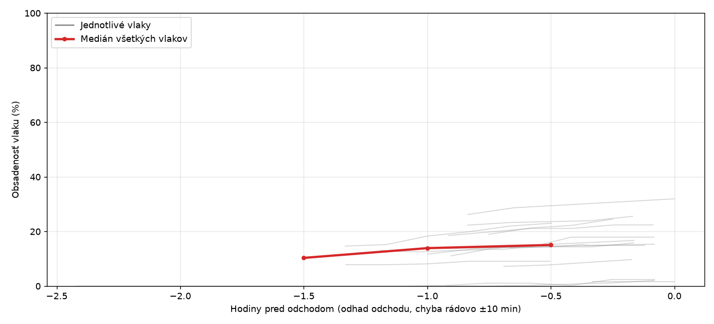
| Pred odchodom | Medián obsadenosti | Vlakov v mediáne |
|---|---|---|
| 1 h | 30 % | 39 |
| 0.5 h | 33 % | 39 |
Plnenie vozňov
Priemerná obsadenosť každého vozňa pri poslednom meraní pred odchodom. Tmavšia farba znamená plnší vozeň. Posledný riadok je priemer cez všetky vlaky.
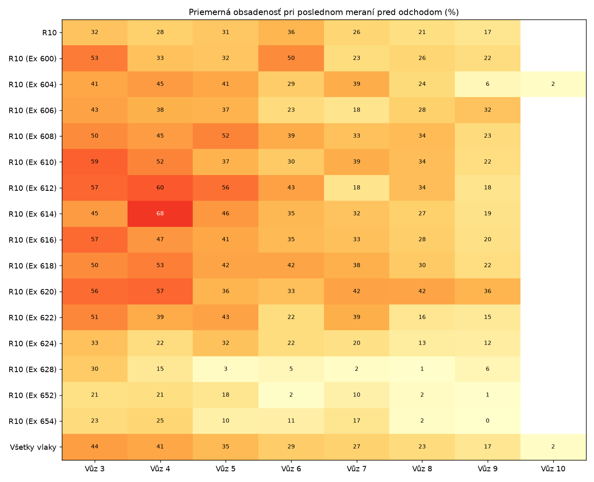
| vozen | Vlak | Vůz 3 | Vůz 4 | Vůz 5 | Vůz 6 | Vůz 7 | Vůz 8 | Vůz 9 | Vůz 10 |
|---|---|---|---|---|---|---|---|---|---|
| R10 | 32 | 28 | 31 | 36 | 26 | 21 | 17 | <NA> | |
| R10 (Ex 600) | 61 | 42 | 52 | 45 | 26 | 31 | 21 | 9 | |
| R10 (Ex 604) | 57 | 50 | 48 | 41 | 36 | 27 | 7 | 9 | |
| R10 (Ex 606) | 54 | 47 | 47 | 26 | 26 | 31 | 22 | 0 | |
| R10 (Ex 608) | 54 | 48 | 47 | 36 | 35 | 33 | 23 | 33 | |
| R10 (Ex 610) | 66 | 56 | 50 | 36 | 44 | 39 | 26 | <NA> | |
| R10 (Ex 612) | 59 | 61 | 56 | 47 | 27 | 40 | 24 | <NA> | |
| R10 (Ex 614) | 45 | 71 | 52 | 38 | 32 | 33 | 19 | <NA> | |
| R10 (Ex 616) | 57 | 54 | 49 | 41 | 36 | 34 | 28 | <NA> | |
| R10 (Ex 618) | 53 | 59 | 48 | 40 | 39 | 34 | 22 | <NA> | |
| R10 (Ex 620) | 60 | 60 | 47 | 37 | 45 | 42 | 36 | <NA> | |
| R10 (Ex 622) | 52 | 48 | 56 | 31 | 40 | 20 | 16 | <NA> | |
| R10 (Ex 624) | 32 | 31 | 35 | 21 | 22 | 15 | 14 | <NA> | |
| R10 (Ex 628) | 25 | 19 | 10 | 9 | 3 | 1 | 4 | <NA> | |
| R10 (Ex 652) | 23 | 28 | 17 | 1 | 7 | 2 | 0 | <NA> | |
| R10 (Ex 654) | 30 | 27 | 17 | 8 | 16 | 2 | 0 | <NA> | |
| neznámy vlak | 89 | 10 | 71 | 54 | 29 | 36 | 11 | 0 | |
| Všetky vlaky | 49 | 45 | 42 | 31 | 29 | 26 | 17 | 10 |
Ktoré miesta sa obsadzujú prvé
Skorosť obsadenia: 100 % znamená, že miesto bolo obsadené už pri prvom meraní, 0 % že sa neobsadilo vôbec. Priemer cez všetky vlaky a dni pre dané číslo miesta vo vozni. Pri málo dňoch dát je výsledok orientačný.
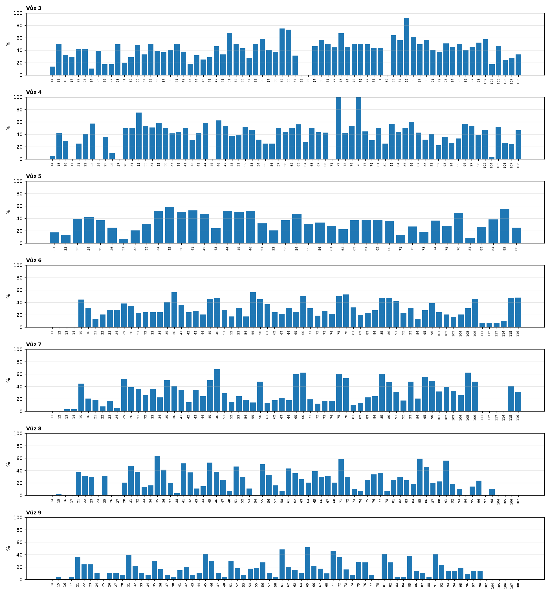
| Kategória | Vozeň | Miesto | Skorosť obsadenia (%) | Pozorovaní (dní) |
|---|---|---|---|---|
| najskôr obsadzované | Vůz 4 | 72 | 83 | 6 |
| najskôr obsadzované | Vůz 3 | 85 | 81 | 7 |
| najskôr obsadzované | Vůz 4 | 76 | 78 | 9 |
| najskôr obsadzované | Vůz 5 | 45 | 77 | 19 |
| najskôr obsadzované | Vůz 10 | 105 | 75 | 4 |
| najskôr obsadzované | Vůz 3 | 73 | 73 | 34 |
| najskôr obsadzované | Vůz 7 | 75 | 72 | 37 |
| najskôr obsadzované | Vůz 3 | 51 | 67 | 15 |
| najskôr obsadzované | Vůz 3 | 62 | 67 | 9 |
| najskôr obsadzované | Vůz 3 | 41 | 67 | 6 |
| najneskôr obsadzované | Vůz 6 | 13 | 0 | 46 |
| najneskôr obsadzované | Vůz 6 | 14 | 0 | 46 |
| najneskôr obsadzované | Vůz 7 | 11 | 0 | 46 |
| najneskôr obsadzované | Vůz 7 | 12 | 0 | 46 |
| najneskôr obsadzované | Vůz 7 | 111 | 0 | 46 |
| najneskôr obsadzované | Vůz 7 | 112 | 0 | 46 |
| najneskôr obsadzované | Vůz 7 | 113 | 0 | 46 |
| najneskôr obsadzované | Vůz 7 | 114 | 0 | 46 |
| najneskôr obsadzované | Vůz 8 | 16 | 0 | 46 |
| najneskôr obsadzované | Vůz 8 | 24 | 0 | 46 |
Predaj miest podľa hodiny dňa
Priemerný počet miest, ktoré sa za hodinu obsadili alebo uvoľnili vo všetkých vozňoch vlaku, podľa porovnania dvoch po sebe idúcich meraní. Hodiny s menej než pol hodinou sledovania sa nezobrazujú.
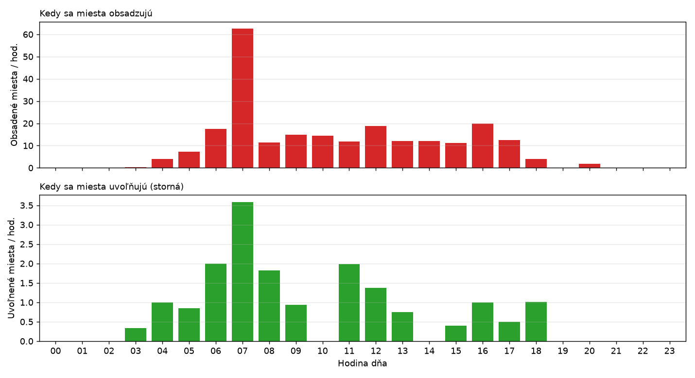
| Hodina | Obsadené miest/hod. | Uvoľnené miest/hod. | Sledované (hod.) |
|---|---|---|---|
| 02:00 | 0.0 | 0.0 | 0.8 |
| 03:00 | 0.3 | 0.3 | 3.0 |
| 04:00 | 4.0 | 1.0 | 3.0 |
| 05:00 | 7.2 | 0.9 | 2.3 |
| 06:00 | 17.5 | 2.0 | 2.0 |
| 07:00 | 62.6 | 3.6 | 2.5 |
| 08:00 | 11.5 | 1.8 | 3.3 |
| 09:00 | 14.9 | 0.9 | 2.1 |
| 10:00 | 14.4 | 0.0 | 1.7 |
| 11:00 | 11.9 | 2.0 | 1.5 |
| 12:00 | 18.8 | 1.4 | 2.2 |
| 13:00 | 12.0 | 0.8 | 1.3 |
| 14:00 | 12.0 | 0.0 | 1.8 |
| 15:00 | 11.2 | 0.4 | 2.5 |
| 16:00 | 20.0 | 1.0 | 2.0 |
| 17:00 | 12.5 | 0.5 | 2.0 |
| 18:00 | 4.0 | 1.0 | 1.0 |
| 20:00 | 1.8 | 0.0 | 1.7 |
Uvoľnené miesta (storná)
Miesta, ktoré boli v jednom meraní obsadené a v ďalšom sa znovu objavili ako voľné. Celkom zaznamenaných: 39 miest v 31 prípadoch. Nižšie je posledných 25.
| Čas | Vlak | Vozeň | Uvoľnené miesta |
|---|---|---|---|
| 31.10. 09:03 | R10 (Ex 604) | Vůz 3 | 14 |
| 31.10. 08:32 | neznámy vlak | Vůz 9 | 91, 102, 108 |
| 31.10. 08:32 | neznámy vlak | Vůz 6 | 64 |
| 31.10. 08:32 | neznámy vlak | Vůz 3 | 105, 107 |
| 31.10. 08:32 | neznámy vlak | Vůz 7 | 41, 43, 44 |
| 31.10. 07:03 | R10 (Ex 600) | Vůz 5 | 85 |
| 31.10. 06:33 | R10 (Ex 600) | Vůz 6 | 25 |
| 31.10. 05:52 | R10 (Ex 654) | Vůz 3 | 35 |
| 31.10. 03:32 | R10 (Ex 652) | Vůz 5 | 45 |
| 30.10. 19:02 | R10 (Ex 624) | Vůz 3 | 46 |
| 30.10. 17:52 | R10 (Ex 622) | Vůz 7 | 31 |
| 30.10. 17:02 | R10 (Ex 620) | Vůz 4 | 87 |
| 30.10. 12:42 | R10 (Ex 612) | Vůz 8 | 35 |
| 30.10. 09:52 | R10 (Ex 606) | Vůz 3 | 93 |
| 30.10. 08:52 | R10 (Ex 604) | Vůz 8 | 71 |
| 30.10. 05:52 | R10 (Ex 654) | Vůz 3 | 72 |
| 29.10. 16:52 | R10 (Ex 620) | Vůz 4 | 48 |
| 29.10. 16:02 | R10 (Ex 618) | Vůz 6 | 82 |
| 29.10. 12:32 | R10 (Ex 612) | Vůz 8 | 71 |
| 29.10. 12:22 | R10 (Ex 612) | Vůz 8 | 66 |
| 29.10. 10:02 | R10 (Ex 606) | Vůz 8 | 56 |
| 29.10. 08:32 | R10 (Ex 604) | Vůz 5 | 85 |
| 29.10. 08:22 | R10 (Ex 604) | Vůz 3 | 102 |
| 29.10. 07:02 | R10 (Ex 600) | Vůz 7 | 15, 16 |
| 29.10. 04:42 | R10 (Ex 652) | Vůz 3 | 83, 88, 97 |
Vypredané vlaky
Vlak sa považuje za vypredaný, keď obsadenosť dosiahne 98 %. Vypredaných vlakov v dátach: 0 z 48.
| Deň | Vlak | Max. obsadenosť | Vypredaný od | Hodín pred odchodom (odhad) |
|---|---|---|---|---|
| 31.10.2026 | R10 (Ex 600) | 19 % | - | - |
| 31.10.2026 | R10 (Ex 604) | 34 % | - | - |
| 31.10.2026 | R10 (Ex 606) | 25 % | - | - |
| 31.10.2026 | R10 (Ex 652) | 4 % | - | - |
| 31.10.2026 | R10 (Ex 654) | 6 % | - | - |
| 31.10.2026 | neznámy vlak | 40 % | - | - |
| 30.10.2026 | R10 (Ex 600) | 28 % | - | - |
| 30.10.2026 | R10 (Ex 604) | 26 % | - | - |
| 30.10.2026 | R10 (Ex 606) | 40 % | - | - |
| 30.10.2026 | R10 (Ex 608) | 30 % | - | - |
| 30.10.2026 | R10 (Ex 610) | 47 % | - | - |
| 30.10.2026 | R10 (Ex 612) | 43 % | - | - |
| 30.10.2026 | R10 (Ex 616) | 45 % | - | - |
| 30.10.2026 | R10 (Ex 618) | 33 % | - | - |
| 30.10.2026 | R10 (Ex 620) | 40 % | - | - |
| 30.10.2026 | R10 (Ex 622) | 35 % | - | - |
| 30.10.2026 | R10 (Ex 624) | 19 % | - | - |
| 30.10.2026 | R10 (Ex 628) | 9 % | - | - |
| 30.10.2026 | R10 (Ex 652) | 10 % | - | - |
| 30.10.2026 | R10 (Ex 654) | 11 % | - | - |
| 29.10.2026 | R10 | 18 % | - | - |
| 29.10.2026 | R10 (Ex 600) | 60 % | - | - |
| 29.10.2026 | R10 (Ex 604) | 44 % | - | - |
| 29.10.2026 | R10 (Ex 606) | 49 % | - | - |
| 29.10.2026 | R10 (Ex 608) | 52 % | - | - |
| 29.10.2026 | R10 (Ex 610) | 44 % | - | - |
| 29.10.2026 | R10 (Ex 612) | 50 % | - | - |
| 29.10.2026 | R10 (Ex 614) | 41 % | - | - |
| 29.10.2026 | R10 (Ex 616) | 28 % | - | - |
| 29.10.2026 | R10 (Ex 618) | 30 % | - | - |
| 29.10.2026 | R10 (Ex 620) | 46 % | - | - |
| 29.10.2026 | R10 (Ex 622) | 29 % | - | - |
| 29.10.2026 | R10 (Ex 628) | 15 % | - | - |
| 29.10.2026 | R10 (Ex 652) | 19 % | - | - |
| 29.10.2026 | R10 (Ex 654) | 24 % | - | - |
| 28.10.2026 | R10 | 33 % | - | - |
| 28.10.2026 | R10 (Ex 604) | 25 % | - | - |
| 28.10.2026 | R10 (Ex 606) | 18 % | - | - |
| 28.10.2026 | R10 (Ex 608) | 27 % | - | - |
| 28.10.2026 | R10 (Ex 610) | 35 % | - | - |
| 28.10.2026 | R10 (Ex 612) | 31 % | - | - |
| 28.10.2026 | R10 (Ex 614) | 33 % | - | - |
| 28.10.2026 | R10 (Ex 616) | 46 % | - | - |
| 28.10.2026 | R10 (Ex 618) | 55 % | - | - |
| 28.10.2026 | R10 (Ex 620) | 47 % | - | - |
| 28.10.2026 | R10 (Ex 622) | 37 % | - | - |
| 28.10.2026 | R10 (Ex 624) | 28 % | - | - |
| 28.10.2026 | R10 (Ex 628) | 7 % | - | - |
Porovnanie dní v týždni
Zatiaľ je v dátach 4 dní, na porovnanie dní v týždni treba aspoň 7. Štatistika sa zobrazí automaticky, keď bude dosť dát.
Spoľahlivosť zberu
Podiel meraní, pri ktorých zberový skript nenašiel žiadne vozne (napríklad v noci, keď sa nedá vybrať miesto). Celkom 135 z 361 meraní.

| Hodina | Meraní | Bez vozňov | Podiel (%) |
|---|---|---|---|
| 00:00 | 14 | 14 | 100 |
| 01:00 | 18 | 18 | 100 |
| 02:00 | 18 | 13 | 72 |
| 03:00 | 18 | 2 | 11 |
| 04:00 | 18 | 0 | 0 |
| 05:00 | 18 | 1 | 6 |
| 06:00 | 16 | 2 | 12 |
| 07:00 | 15 | 13 | 87 |
| 08:00 | 27 | 2 | 7 |
| 09:00 | 18 | 2 | 11 |
| 10:00 | 17 | 3 | 18 |
| 11:00 | 11 | 0 | 0 |
| 12:00 | 16 | 6 | 38 |
| 13:00 | 11 | 4 | 36 |
| 14:00 | 15 | 3 | 20 |
| 15:00 | 14 | 4 | 29 |
| 16:00 | 18 | 3 | 17 |
| 17:00 | 18 | 4 | 22 |
| 18:00 | 9 | 2 | 22 |
| 19:00 | 12 | 10 | 83 |
| 20:00 | 12 | 3 | 25 |
| 21:00 | 12 | 10 | 83 |
| 22:00 | 6 | 6 | 100 |
| 23:00 | 10 | 10 | 100 |
Bratislava → Košice
Typický priebeh obsadenosti pred odchodom
Sivé čiary sú jednotlivé vlaky, červená čiara je medián. Ukazuje, koľko hodín pred odchodom sa vlaky bežne plnia. Obsadenosť sa počíta z odhadnutej kapacity a čas odchodu je odhad z časov meraní.
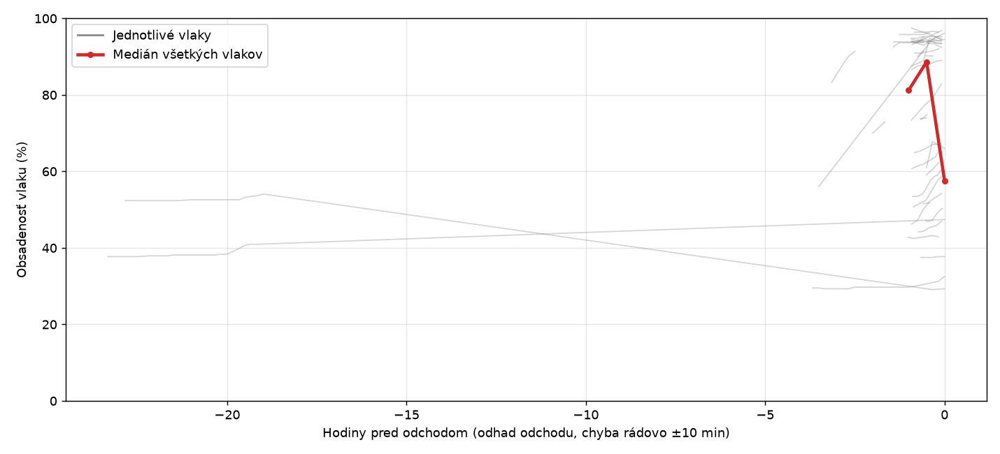
| Pred odchodom | Medián obsadenosti | Vlakov v mediáne |
|---|---|---|
| 1 h | 81 % | 34 |
| 0.5 h | 89 % | 33 |
Plnenie vozňov
Priemerná obsadenosť každého vozňa pri poslednom meraní pred odchodom. Tmavšia farba znamená plnší vozeň. Posledný riadok je priemer cez všetky vlaky.
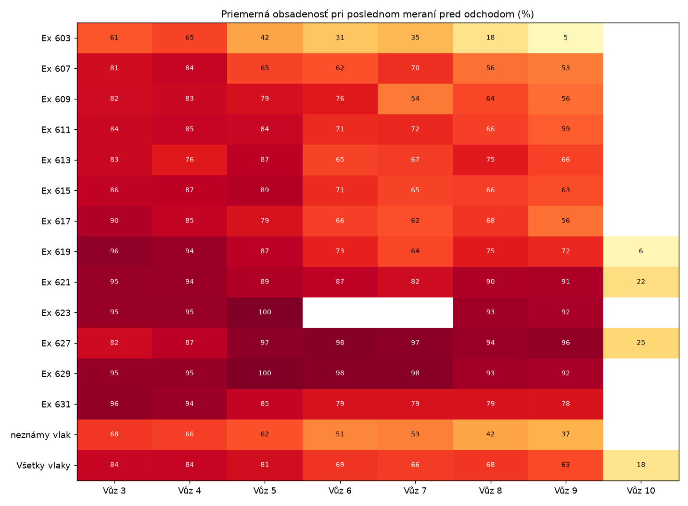
| vozen | Vlak | Vůz 3 | Vůz 4 | Vůz 5 | Vůz 6 | Vůz 7 | Vůz 8 | Vůz 9 | Vůz 10 |
|---|---|---|---|---|---|---|---|---|---|
| Ex 603 | 61 | 65 | 42 | 31 | 35 | 18 | 5 | <NA> | |
| Ex 607 | 81 | 84 | 65 | 62 | 70 | 56 | 53 | <NA> | |
| Ex 609 | 82 | 83 | 79 | 76 | 54 | 64 | 56 | <NA> | |
| Ex 611 | 84 | 85 | 84 | 71 | 72 | 66 | 59 | <NA> | |
| Ex 613 | 83 | 76 | 87 | 65 | 67 | 75 | 66 | <NA> | |
| Ex 615 | 86 | 87 | 89 | 71 | 65 | 66 | 63 | <NA> | |
| Ex 617 | 90 | 85 | 79 | 66 | 62 | 68 | 56 | <NA> | |
| Ex 619 | 96 | 94 | 87 | 73 | 64 | 75 | 72 | 6 | |
| Ex 621 | 95 | 94 | 89 | 87 | 82 | 90 | 91 | 22 | |
| Ex 623 | 95 | 95 | 100 | <NA> | <NA> | 93 | 92 | <NA> | |
| Ex 627 | 82 | 87 | 97 | 98 | 97 | 94 | 96 | 25 | |
| Ex 629 | 95 | 95 | 100 | 98 | 98 | 93 | 92 | <NA> | |
| Ex 631 | 96 | 94 | 85 | 79 | 79 | 79 | 78 | <NA> | |
| neznámy vlak | 68 | 66 | 62 | 51 | 53 | 42 | 37 | <NA> | |
| Všetky vlaky | 84 | 84 | 81 | 69 | 66 | 68 | 63 | 18 |
Ktoré miesta sa obsadzujú prvé
Skorosť obsadenia: 100 % znamená, že miesto bolo obsadené už pri prvom meraní, 0 % že sa neobsadilo vôbec. Priemer cez všetky vlaky a dni pre dané číslo miesta vo vozni. Pri málo dňoch dát je výsledok orientačný.
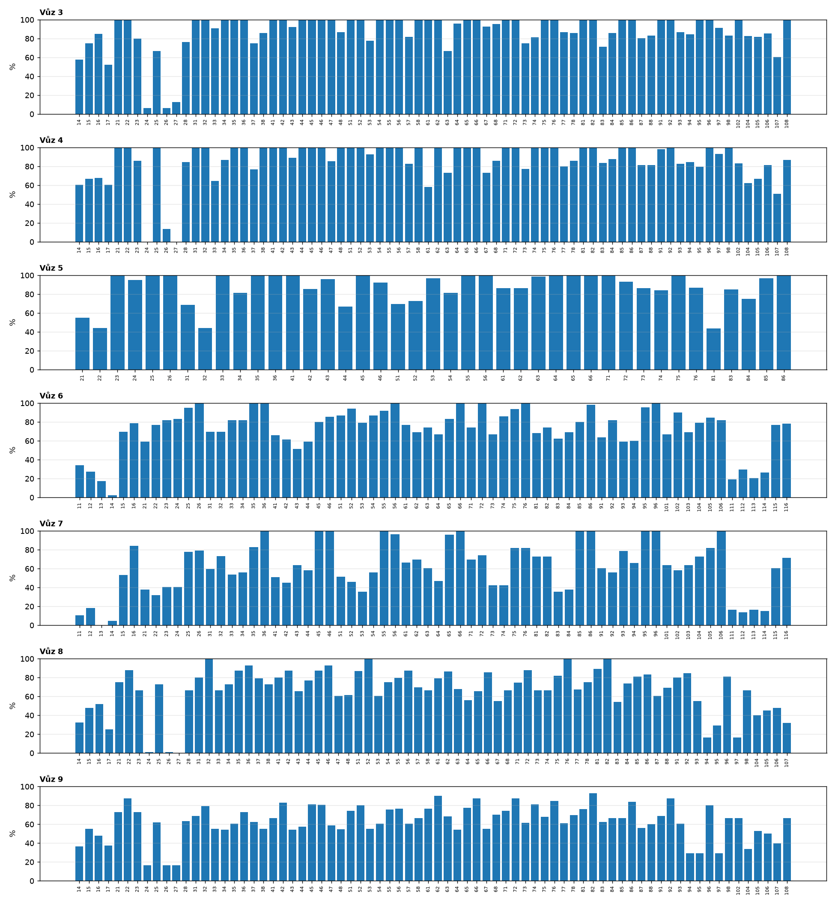
| Kategória | Vozeň | Miesto | Skorosť obsadenia (%) | Pozorovaní (dní) |
|---|---|---|---|---|
| najskôr obsadzované | Vůz 4 | 44 | 100 | 34 |
| najskôr obsadzované | Vůz 4 | 21 | 100 | 33 |
| najskôr obsadzované | Vůz 4 | 81 | 100 | 33 |
| najskôr obsadzované | Vůz 3 | 34 | 100 | 32 |
| najskôr obsadzované | Vůz 8 | 82 | 100 | 32 |
| najskôr obsadzované | Vůz 4 | 38 | 100 | 30 |
| najskôr obsadzované | Vůz 4 | 54 | 100 | 30 |
| najskôr obsadzované | Vůz 3 | 21 | 100 | 29 |
| najskôr obsadzované | Vůz 5 | 36 | 100 | 28 |
| najskôr obsadzované | Vůz 6 | 56 | 100 | 28 |
| najneskôr obsadzované | Vůz 4 | 27 | 0 | 39 |
| najneskôr obsadzované | Vůz 8 | 27 | 0 | 39 |
| najneskôr obsadzované | Vůz 7 | 13 | 0 | 26 |
| najneskôr obsadzované | Vůz 10 | 11 | 0 | 2 |
| najneskôr obsadzované | Vůz 10 | 12 | 0 | 2 |
| najneskôr obsadzované | Vůz 10 | 13 | 0 | 2 |
| najneskôr obsadzované | Vůz 10 | 15 | 0 | 2 |
| najneskôr obsadzované | Vůz 10 | 23 | 0 | 2 |
| najneskôr obsadzované | Vůz 10 | 24 | 0 | 2 |
| najneskôr obsadzované | Vůz 10 | 32 | 0 | 2 |
Predaj miest podľa hodiny dňa
Priemerný počet miest, ktoré sa za hodinu obsadili alebo uvoľnili vo všetkých vozňoch vlaku, podľa porovnania dvoch po sebe idúcich meraní. Hodiny s menej než pol hodinou sledovania sa nezobrazujú.
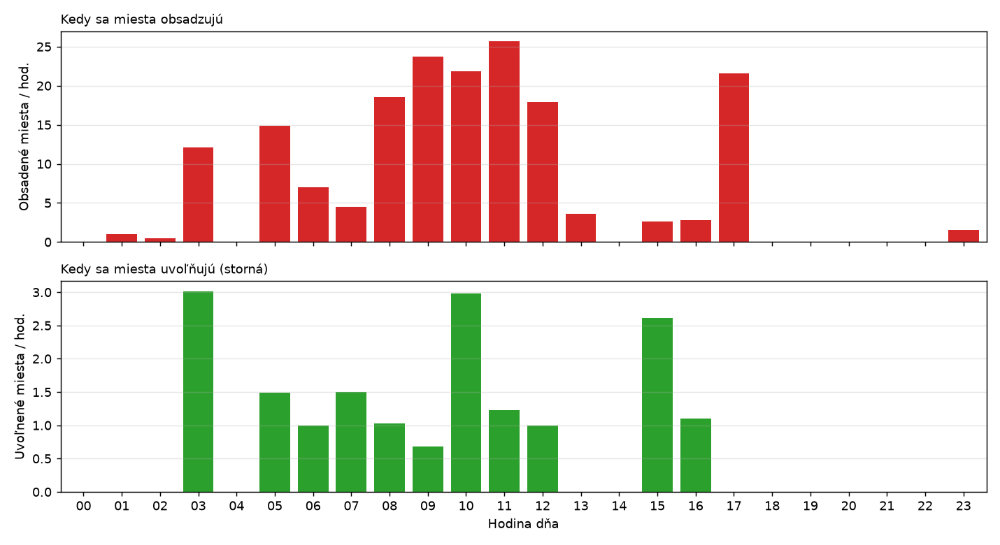
| Hodina | Obsadené miest/hod. | Uvoľnené miest/hod. | Sledované (hod.) |
|---|---|---|---|
| 00:00 | 0.0 | 0.5 | 2.2 |
| 01:00 | 1.3 | 0.0 | 3.2 |
| 02:00 | 0.3 | 0.0 | 3.0 |
| 03:00 | 12.7 | 2.3 | 3.0 |
| 05:00 | 12.0 | 2.0 | 2.0 |
| 06:00 | 8.9 | 1.8 | 1.7 |
| 07:00 | 9.1 | 1.0 | 1.0 |
| 08:00 | 24.4 | 1.4 | 2.8 |
| 09:00 | 22.4 | 1.0 | 2.0 |
| 10:00 | 22.2 | 3.4 | 1.2 |
| 11:00 | 30.4 | 2.5 | 2.0 |
| 12:00 | 21.7 | 1.7 | 2.4 |
| 13:00 | 3.6 | 0.0 | 0.8 |
| 15:00 | 2.6 | 2.6 | 1.1 |
| 16:00 | 14.6 | 0.8 | 2.5 |
| 17:00 | 23.5 | 1.0 | 2.0 |
| 23:00 | 2.0 | 0.0 | 1.0 |
Uvoľnené miesta (storná)
Miesta, ktoré boli v jednom meraní obsadené a v ďalšom sa znovu objavili ako voľné. Celkom zaznamenaných: 48 miest v 43 prípadoch. Nižšie je posledných 25.
| Čas | Vlak | Vozeň | Uvoľnené miesta |
|---|---|---|---|
| 31.10. 09:13 | Ex 613 | Vůz 4 | 63 |
| 31.10. 08:54 | Ex 613 | Vůz 5 | 86 |
| 31.10. 08:42 | Ex 613 | Vůz 3 | 72 |
| 31.10. 07:04 | Ex 609 | Vůz 8 | 91 |
| 31.10. 06:13 | Ex 607 | Vůz 3 | 68 |
| 31.10. 06:02 | Ex 607 | Vůz 7 | 55 |
| 31.10. 05:33 | Ex 607 | Vůz 6 | 91 |
| 31.10. 04:03 | Ex 603 | Vůz 4 | 41 |
| 31.10. 00:43 | Ex 603 | Vůz 4 | 81 |
| 30.10. 17:53 | Ex 631 | Vůz 4 | 105 |
| 30.10. 17:53 | Ex 631 | Vůz 9 | 96 |
| 30.10. 12:43 | Ex 621 | Vůz 6 | 82, 102 |
| 30.10. 12:03 | Ex 619 | Vůz 5 | 44 |
| 30.10. 11:53 | Ex 619 | Vůz 9 | 62 |
| 30.10. 11:53 | Ex 619 | Vůz 4 | 15 |
| 30.10. 10:43 | Ex 617 | Vůz 3 | 105 |
| 30.10. 06:33 | Ex 609 | Vůz 6 | 22 |
| 30.10. 04:13 | Ex 603 | Vůz 3 | 34 |
| 29.10. 16:13 | Ex 627 | Vůz 8 | 15 |
| 29.10. 15:43 | Ex 627 | Vůz 8 | 15 |
| 29.10. 15:43 | Ex 627 | Vůz 9 | 15 |
| 29.10. 15:33 | Ex 627 | Vůz 4 | 106 |
| 29.10. 14:13 | Ex 623 | Vůz 4 | 97 |
| 29.10. 05:42 | Ex 607 | Vůz 6 | 33 |
| 29.10. 05:33 | Ex 607 | Vůz 8 | 87 |
Vypredané vlaky
Vlak sa považuje za vypredaný, keď obsadenosť dosiahne 98 %. Vypredaných vlakov v dátach: 0 z 44.
| Deň | Vlak | Max. obsadenosť | Vypredaný od | Hodín pred odchodom (odhad) |
|---|---|---|---|---|
| 31.10.2026 | Ex 603 | 33 % | - | - |
| 31.10.2026 | Ex 607 | 43 % | - | - |
| 31.10.2026 | Ex 609 | 47 % | - | - |
| 31.10.2026 | Ex 611 | 52 % | - | - |
| 31.10.2026 | Ex 613 | 54 % | - | - |
| 31.10.2026 | Ex 615 | 58 % | - | - |
| 31.10.2026 | neznámy vlak | 27 % | - | - |
| 30.10.2026 | Ex 603 | 54 % | - | - |
| 30.10.2026 | Ex 607 | 67 % | - | - |
| 30.10.2026 | Ex 609 | 74 % | - | - |
| 30.10.2026 | Ex 611 | 90 % | - | - |
| 30.10.2026 | Ex 613 | 92 % | - | - |
| 30.10.2026 | Ex 615 | 90 % | - | - |
| 30.10.2026 | Ex 617 | 75 % | - | - |
| 30.10.2026 | Ex 619 | 62 % | - | - |
| 30.10.2026 | Ex 621 | 73 % | - | - |
| 30.10.2026 | Ex 627 | 93 % | - | - |
| 30.10.2026 | Ex 629 | 95 % | - | - |
| 30.10.2026 | Ex 631 | 68 % | - | - |
| 29.10.2026 | Ex 603 | 47 % | - | - |
| 29.10.2026 | Ex 607 | 89 % | - | - |
| 29.10.2026 | Ex 609 | 92 % | - | - |
| 29.10.2026 | Ex 611 | 95 % | - | - |
| 29.10.2026 | Ex 613 | 97 % | - | - |
| 29.10.2026 | Ex 615 | 94 % | - | - |
| 29.10.2026 | Ex 619 | 97 % | - | - |
| 29.10.2026 | Ex 621 | 96 % | - | - |
| 29.10.2026 | Ex 623 | 94 % | - | - |
| 29.10.2026 | Ex 627 | 94 % | - | - |
| 29.10.2026 | Ex 629 | 95 % | - | - |
| 29.10.2026 | Ex 631 | 94 % | - | - |
| 29.10.2026 | neznámy vlak | 36 % | - | - |
| 28.10.2026 | Ex 603 | 38 % | - | - |
| 28.10.2026 | Ex 611 | 50 % | - | - |
| 28.10.2026 | Ex 613 | 60 % | - | - |
| 28.10.2026 | Ex 615 | 59 % | - | - |
| 28.10.2026 | Ex 617 | 67 % | - | - |
| 28.10.2026 | Ex 619 | 83 % | - | - |
| 28.10.2026 | Ex 621 | 97 % | - | - |
| 28.10.2026 | Ex 623 | 94 % | - | - |
| 28.10.2026 | Ex 627 | 95 % | - | - |
| 28.10.2026 | Ex 629 | 94 % | - | - |
| 28.10.2026 | Ex 631 | 91 % | - | - |
| 28.10.2026 | neznámy vlak | 96 % | - | - |
Porovnanie dní v týždni
Zatiaľ je v dátach 4 dní, na porovnanie dní v týždni treba aspoň 7. Štatistika sa zobrazí automaticky, keď bude dosť dát.
Spoľahlivosť zberu
Podiel meraní, pri ktorých zberový skript nenašiel žiadne vozne (napríklad v noci, keď sa nedá vybrať miesto). Celkom 126 z 356 meraní.
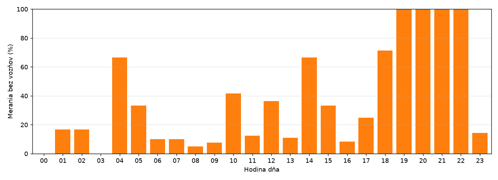
| Hodina | Meraní | Bez vozňov | Podiel (%) |
|---|---|---|---|
| 00:00 | 14 | 0 | 0 |
| 01:00 | 18 | 3 | 17 |
| 02:00 | 18 | 3 | 17 |
| 03:00 | 18 | 3 | 17 |
| 04:00 | 18 | 13 | 72 |
| 05:00 | 18 | 7 | 39 |
| 06:00 | 16 | 2 | 12 |
| 07:00 | 14 | 1 | 7 |
| 08:00 | 26 | 1 | 4 |
| 09:00 | 19 | 3 | 16 |
| 10:00 | 17 | 8 | 47 |
| 11:00 | 10 | 1 | 10 |
| 12:00 | 16 | 6 | 38 |
| 13:00 | 9 | 1 | 11 |
| 14:00 | 15 | 11 | 73 |
| 15:00 | 14 | 6 | 43 |
| 16:00 | 18 | 2 | 11 |
| 17:00 | 18 | 5 | 28 |
| 18:00 | 9 | 7 | 78 |
| 19:00 | 11 | 11 | 100 |
| 20:00 | 12 | 12 | 100 |
| 21:00 | 12 | 12 | 100 |
| 22:00 | 6 | 5 | 83 |
| 23:00 | 10 | 3 | 30 |
Košice → Bratislava
Typický priebeh obsadenosti pred odchodom
Sivé čiary sú jednotlivé vlaky, červená čiara je medián. Ukazuje, koľko hodín pred odchodom sa vlaky bežne plnia. Obsadenosť sa počíta z odhadnutej kapacity a čas odchodu je odhad z časov meraní.
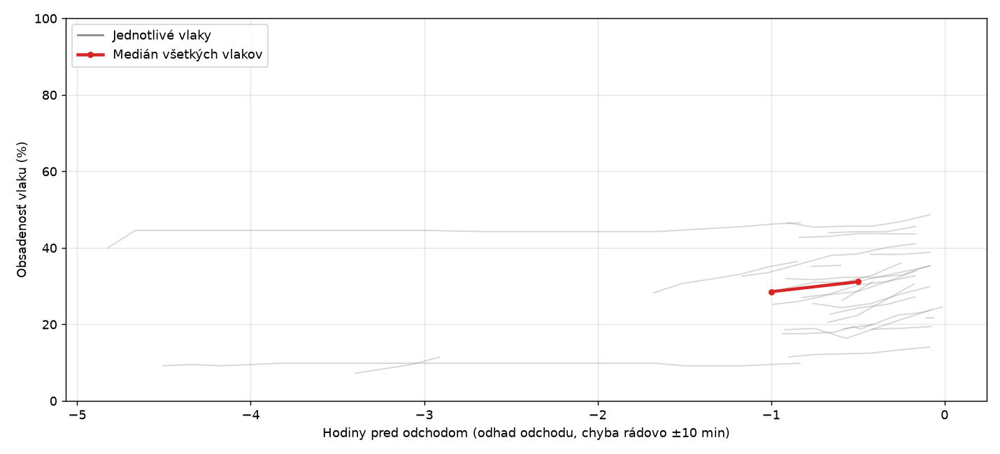
| Pred odchodom | Medián obsadenosti | Vlakov v mediáne |
|---|---|---|
| 1 h | 31 % | 27 |
| 0.5 h | 34 % | 29 |
Plnenie vozňov
Priemerná obsadenosť každého vozňa pri poslednom meraní pred odchodom. Tmavšia farba znamená plnší vozeň. Posledný riadok je priemer cez všetky vlaky.
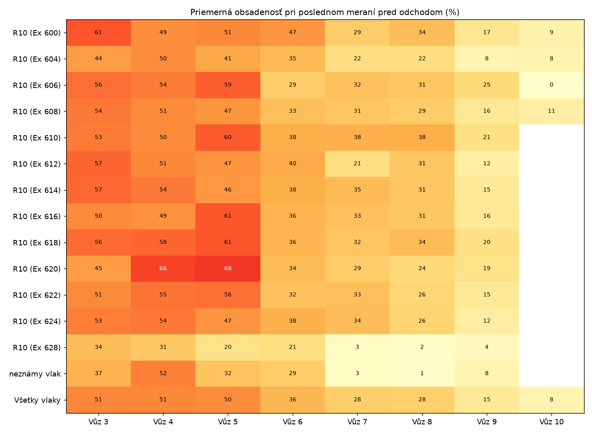
| vozen | Vlak | Vůz 3 | Vůz 4 | Vůz 5 | Vůz 6 | Vůz 7 | Vůz 8 | Vůz 9 | Vůz 10 |
|---|---|---|---|---|---|---|---|---|---|
| R10 (Ex 600) | 61 | 49 | 51 | 47 | 29 | 34 | 17 | 9 | |
| R10 (Ex 604) | 44 | 50 | 41 | 35 | 22 | 22 | 8 | 8 | |
| R10 (Ex 606) | 56 | 54 | 59 | 29 | 32 | 31 | 25 | 0 | |
| R10 (Ex 608) | 54 | 51 | 47 | 33 | 31 | 29 | 16 | 11 | |
| R10 (Ex 610) | 53 | 50 | 60 | 38 | 38 | 38 | 21 | <NA> | |
| R10 (Ex 612) | 57 | 51 | 47 | 40 | 21 | 31 | 12 | <NA> | |
| R10 (Ex 614) | 57 | 54 | 46 | 38 | 35 | 31 | 15 | <NA> | |
| R10 (Ex 616) | 50 | 49 | 61 | 36 | 33 | 31 | 16 | <NA> | |
| R10 (Ex 618) | 56 | 58 | 61 | 36 | 32 | 34 | 20 | <NA> | |
| R10 (Ex 620) | 45 | 66 | 68 | 34 | 29 | 24 | 19 | <NA> | |
| R10 (Ex 622) | 51 | 55 | 56 | 32 | 33 | 26 | 15 | <NA> | |
| R10 (Ex 624) | 53 | 54 | 47 | 38 | 34 | 26 | 12 | <NA> | |
| R10 (Ex 628) | 34 | 31 | 20 | 21 | 3 | 2 | 4 | <NA> | |
| neznámy vlak | 37 | 52 | 32 | 29 | 3 | 1 | 8 | <NA> | |
| Všetky vlaky | 51 | 51 | 50 | 36 | 28 | 28 | 15 | 8 |
Ktoré miesta sa obsadzujú prvé
Skorosť obsadenia: 100 % znamená, že miesto bolo obsadené už pri prvom meraní, 0 % že sa neobsadilo vôbec. Priemer cez všetky vlaky a dni pre dané číslo miesta vo vozni. Pri málo dňoch dát je výsledok orientačný.
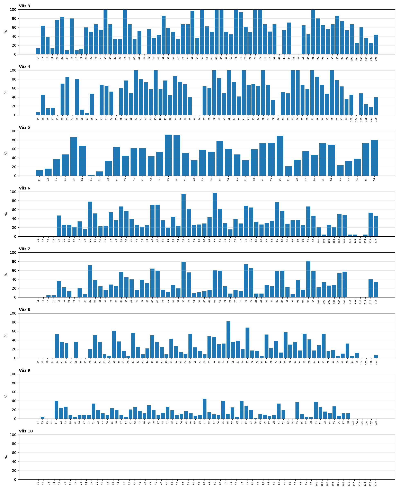
| Kategória | Vozeň | Miesto | Skorosť obsadenia (%) | Pozorovaní (dní) |
|---|---|---|---|---|
| najskôr obsadzované | Vůz 3 | 66 | 100 | 5 |
| najskôr obsadzované | Vůz 3 | 62 | 100 | 4 |
| najskôr obsadzované | Vůz 4 | 76 | 100 | 4 |
| najskôr obsadzované | Vůz 4 | 85 | 100 | 4 |
| najskôr obsadzované | Vůz 3 | 61 | 100 | 3 |
| najskôr obsadzované | Vůz 3 | 76 | 100 | 3 |
| najskôr obsadzované | Vůz 3 | 91 | 100 | 3 |
| najskôr obsadzované | Vůz 4 | 45 | 100 | 3 |
| najskôr obsadzované | Vůz 4 | 95 | 100 | 3 |
| najskôr obsadzované | Vůz 3 | 21 | 100 | 2 |
| najneskôr obsadzované | Vůz 4 | 24 | 0 | 35 |
| najneskôr obsadzované | Vůz 6 | 13 | 0 | 35 |
| najneskôr obsadzované | Vůz 6 | 14 | 0 | 35 |
| najneskôr obsadzované | Vůz 6 | 113 | 0 | 35 |
| najneskôr obsadzované | Vůz 7 | 11 | 0 | 35 |
| najneskôr obsadzované | Vůz 7 | 111 | 0 | 35 |
| najneskôr obsadzované | Vůz 7 | 112 | 0 | 35 |
| najneskôr obsadzované | Vůz 7 | 113 | 0 | 35 |
| najneskôr obsadzované | Vůz 7 | 114 | 0 | 35 |
| najneskôr obsadzované | Vůz 8 | 14 | 0 | 35 |
Predaj miest podľa hodiny dňa
Priemerný počet miest, ktoré sa za hodinu obsadili alebo uvoľnili vo všetkých vozňoch vlaku, podľa porovnania dvoch po sebe idúcich meraní. Hodiny s menej než pol hodinou sledovania sa nezobrazujú.
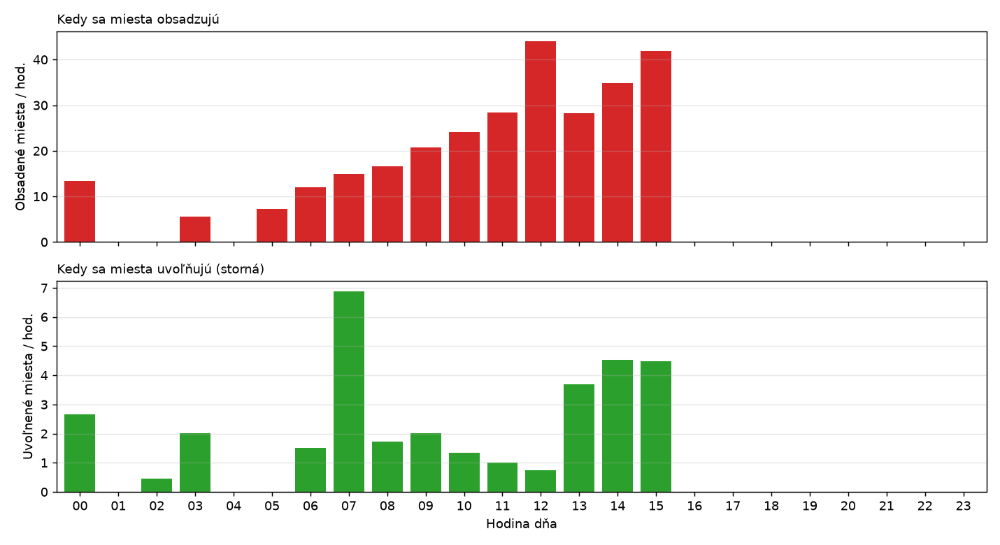
| Hodina | Obsadené miest/hod. | Uvoľnené miest/hod. | Sledované (hod.) |
|---|---|---|---|
| 00:00 | 14.1 | 2.2 | 1.8 |
| 01:00 | 0.3 | 0.0 | 3.0 |
| 02:00 | 0.0 | 0.3 | 3.3 |
| 03:00 | 5.7 | 2.0 | 3.0 |
| 05:00 | 11.8 | 0.0 | 1.0 |
| 06:00 | 12.1 | 0.9 | 1.2 |
| 07:00 | 14.6 | 5.9 | 1.0 |
| 08:00 | 13.4 | 1.8 | 2.2 |
| 09:00 | 22.0 | 1.9 | 2.1 |
| 10:00 | 20.7 | 1.8 | 2.2 |
| 11:00 | 25.2 | 1.7 | 1.1 |
| 12:00 | 40.8 | 1.5 | 2.0 |
| 13:00 | 28.2 | 3.7 | 0.8 |
| 14:00 | 32.7 | 4.0 | 1.5 |
| 15:00 | 41.8 | 4.5 | 1.3 |
Uvoľnené miesta (storná)
Miesta, ktoré boli v jednom meraní obsadené a v ďalšom sa znovu objavili ako voľné. Celkom zaznamenaných: 50 miest v 32 prípadoch. Nižšie je posledných 25.
| Čas | Vlak | Vozeň | Uvoľnené miesta |
|---|---|---|---|
| 31.10. 03:54 | R10 (Ex 600) | Vůz 6 | 45 |
| 31.10. 03:43 | R10 (Ex 600) | Vůz 3 | 74 |
| 30.10. 12:13 | R10 (Ex 618) | Vůz 7 | 15, 16 |
| 30.10. 12:04 | R10 (Ex 618) | Vůz 6 | 96 |
| 30.10. 10:44 | R10 (Ex 614) | Vůz 9 | 51, 71 |
| 30.10. 10:03 | R10 (Ex 614) | Vůz 6 | 46 |
| 30.10. 08:43 | R10 (Ex 610) | Vůz 4 | 38 |
| 30.10. 03:23 | R10 (Ex 600) | Vůz 6 | 53, 55 |
| 30.10. 00:43 | R10 (Ex 600) | Vůz 8 | 28 |
| 29.10. 15:24 | R10 (Ex 624) | Vůz 6 | 31, 32 |
| 29.10. 15:03 | R10 (Ex 624) | Vůz 6 | 116 |
| 29.10. 15:03 | R10 (Ex 624) | Vůz 5 | 73, 74, 75, 76 |
| 29.10. 14:23 | R10 (Ex 622) | Vůz 6 | 96 |
| 29.10. 10:43 | R10 (Ex 614) | Vůz 4 | 73 |
| 29.10. 09:23 | R10 (Ex 612) | Vůz 3 | 74 |
| 29.10. 09:13 | R10 (Ex 612) | Vůz 3 | 28 |
| 29.10. 08:43 | R10 (Ex 610) | Vůz 8 | 66 |
| 29.10. 07:13 | R10 (Ex 608) | Vůz 9 | 71, 72, 73, 75, 77, 78 |
| 29.10. 06:33 | R10 (Ex 606) | Vůz 8 | 51 |
| 29.10. 03:53 | R10 (Ex 600) | Vůz 7 | 115, 116 |
| 29.10. 02:13 | R10 (Ex 600) | Vůz 3 | 56 |
| 29.10. 00:13 | R10 (Ex 600) | Vůz 4 | 17, 27, 107 |
| 28.10. 15:53 | R10 (Ex 624) | Vůz 4 | 86 |
| 28.10. 15:53 | R10 (Ex 624) | Vůz 6 | 76, 115 |
| 28.10. 15:13 | R10 (Ex 624) | Vůz 6 | 106 |
Vypredané vlaky
Vlak sa považuje za vypredaný, keď obsadenosť dosiahne 98 %. Vypredaných vlakov v dátach: 0 z 43.
| Deň | Vlak | Max. obsadenosť | Vypredaný od | Hodín pred odchodom (odhad) |
|---|---|---|---|---|
| 31.10.2026 | R10 (Ex 600) | 17 % | - | - |
| 31.10.2026 | R10 (Ex 604) | 18 % | - | - |
| 31.10.2026 | R10 (Ex 606) | 23 % | - | - |
| 31.10.2026 | R10 (Ex 608) | 25 % | - | - |
| 31.10.2026 | R10 (Ex 610) | 41 % | - | - |
| 31.10.2026 | R10 (Ex 612) | 35 % | - | - |
| 30.10.2026 | R10 (Ex 600) | 25 % | - | - |
| 30.10.2026 | R10 (Ex 604) | 23 % | - | - |
| 30.10.2026 | R10 (Ex 606) | 38 % | - | - |
| 30.10.2026 | R10 (Ex 608) | 27 % | - | - |
| 30.10.2026 | R10 (Ex 610) | 40 % | - | - |
| 30.10.2026 | R10 (Ex 614) | 42 % | - | - |
| 30.10.2026 | R10 (Ex 616) | 33 % | - | - |
| 30.10.2026 | R10 (Ex 618) | 31 % | - | - |
| 30.10.2026 | R10 (Ex 622) | 32 % | - | - |
| 30.10.2026 | R10 (Ex 624) | 29 % | - | - |
| 30.10.2026 | R10 (Ex 628) | 13 % | - | - |
| 30.10.2026 | neznámy vlak | 11 % | - | - |
| 29.10.2026 | R10 (Ex 600) | 56 % | - | - |
| 29.10.2026 | R10 (Ex 604) | 41 % | - | - |
| 29.10.2026 | R10 (Ex 606) | 47 % | - | - |
| 29.10.2026 | R10 (Ex 608) | 51 % | - | - |
| 29.10.2026 | R10 (Ex 610) | 48 % | - | - |
| 29.10.2026 | R10 (Ex 612) | 41 % | - | - |
| 29.10.2026 | R10 (Ex 614) | 35 % | - | - |
| 29.10.2026 | R10 (Ex 616) | 35 % | - | - |
| 29.10.2026 | R10 (Ex 618) | 37 % | - | - |
| 29.10.2026 | R10 (Ex 620) | 27 % | - | - |
| 29.10.2026 | R10 (Ex 622) | 32 % | - | - |
| 29.10.2026 | R10 (Ex 624) | 36 % | - | - |
| 29.10.2026 | R10 (Ex 628) | 22 % | - | - |
| 29.10.2026 | neznámy vlak | 46 % | - | - |
| 28.10.2026 | R10 (Ex 600) | 50 % | - | - |
| 28.10.2026 | R10 (Ex 608) | 26 % | - | - |
| 28.10.2026 | R10 (Ex 610) | 29 % | - | - |
| 28.10.2026 | R10 (Ex 612) | 21 % | - | - |
| 28.10.2026 | R10 (Ex 614) | 27 % | - | - |
| 28.10.2026 | R10 (Ex 616) | 39 % | - | - |
| 28.10.2026 | R10 (Ex 618) | 47 % | - | - |
| 28.10.2026 | R10 (Ex 620) | 41 % | - | - |
| 28.10.2026 | R10 (Ex 622) | 38 % | - | - |
| 28.10.2026 | R10 (Ex 624) | 42 % | - | - |
| 28.10.2026 | R10 (Ex 628) | 13 % | - | - |
Porovnanie dní v týždni
Zatiaľ je v dátach 4 dní, na porovnanie dní v týždni treba aspoň 7. Štatistika sa zobrazí automaticky, keď bude dosť dát.
Spoľahlivosť zberu
Podiel meraní, pri ktorých zberový skript nenašiel žiadne vozne (napríklad v noci, keď sa nedá vybrať miesto). Celkom 164 z 350 meraní.
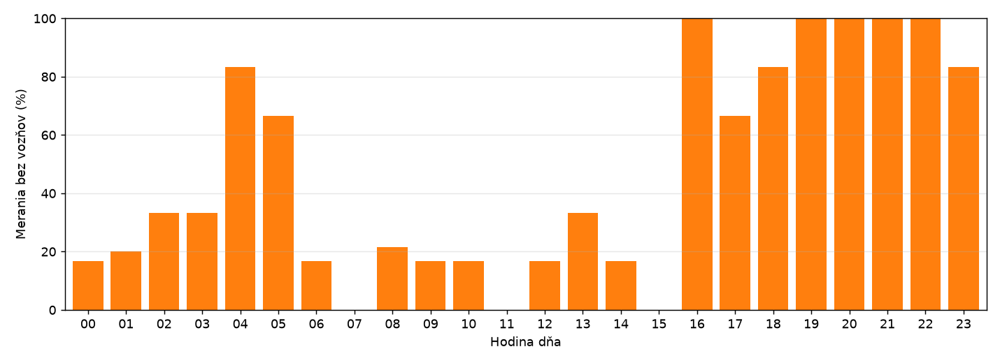
| Hodina | Meraní | Bez vozňov | Podiel (%) |
|---|---|---|---|
| 00:00 | 14 | 2 | 14 |
| 01:00 | 17 | 4 | 24 |
| 02:00 | 18 | 7 | 39 |
| 03:00 | 18 | 4 | 22 |
| 04:00 | 18 | 15 | 83 |
| 05:00 | 18 | 12 | 67 |
| 06:00 | 16 | 5 | 31 |
| 07:00 | 13 | 1 | 8 |
| 08:00 | 25 | 5 | 20 |
| 09:00 | 18 | 5 | 28 |
| 10:00 | 17 | 5 | 29 |
| 11:00 | 10 | 0 | 0 |
| 12:00 | 16 | 4 | 25 |
| 13:00 | 11 | 5 | 45 |
| 14:00 | 15 | 3 | 20 |
| 15:00 | 13 | 1 | 8 |
| 16:00 | 18 | 18 | 100 |
| 17:00 | 18 | 13 | 72 |
| 18:00 | 8 | 7 | 88 |
| 19:00 | 11 | 11 | 100 |
| 20:00 | 11 | 11 | 100 |
| 21:00 | 11 | 11 | 100 |
| 22:00 | 6 | 6 | 100 |
| 23:00 | 10 | 9 | 90 |
História grafov po dňoch
Bratislava → Vrútky
sobota 31.10.2026
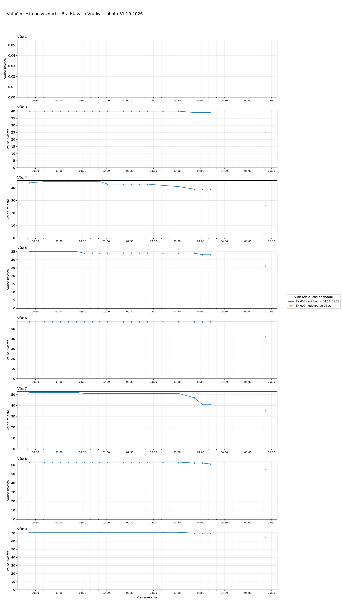

piatok 30.10.2026
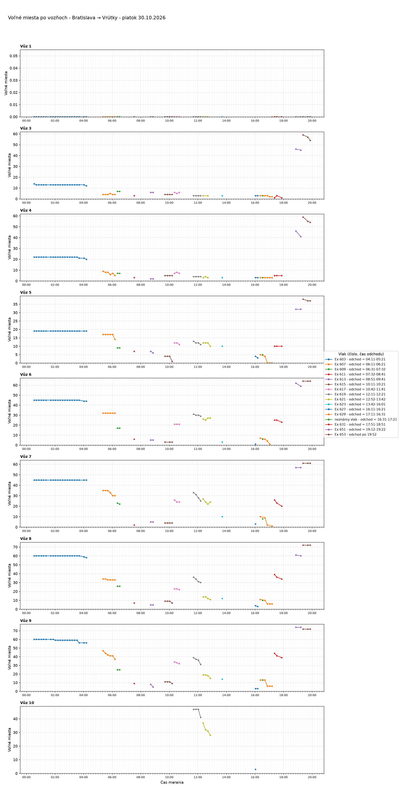

štvrtok 29.10.2026
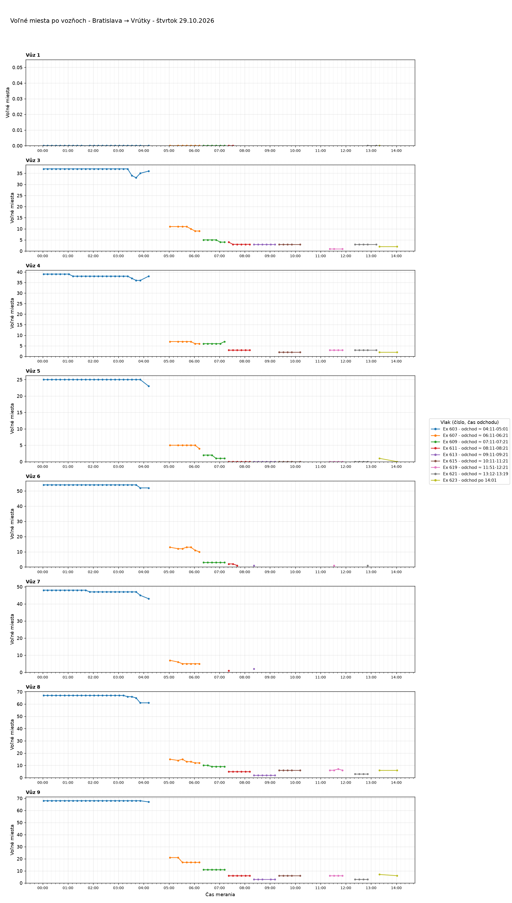

streda 28.10.2026

utorok 27.10.2026

pondelok 26.10.2026

nedeľa 25.10.2026

sobota 24.10.2026

piatok 23.10.2026

štvrtok 22.10.2026

streda 21.10.2026

utorok 20.10.2026

Vrútky → Bratislava
sobota 31.10.2026
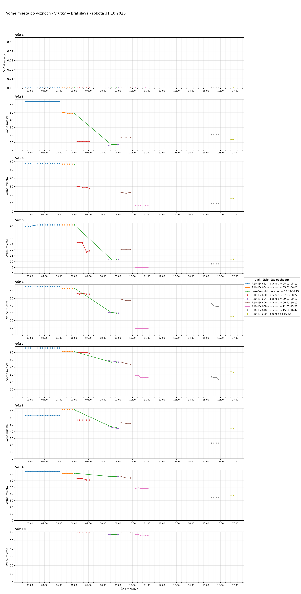

piatok 30.10.2026
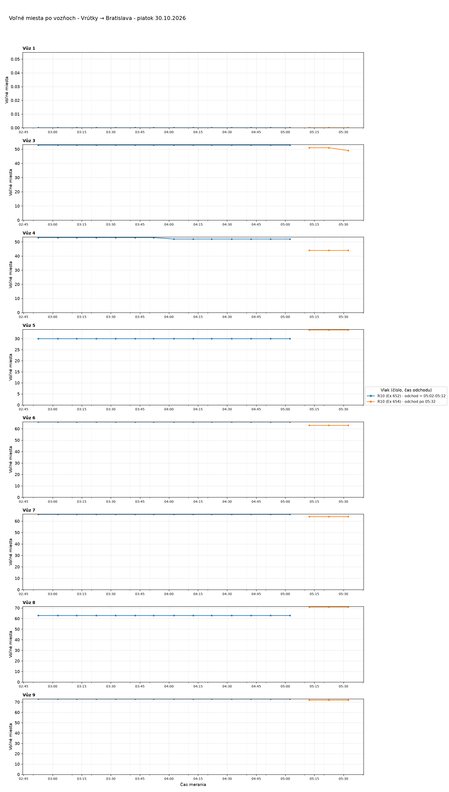

štvrtok 29.10.2026
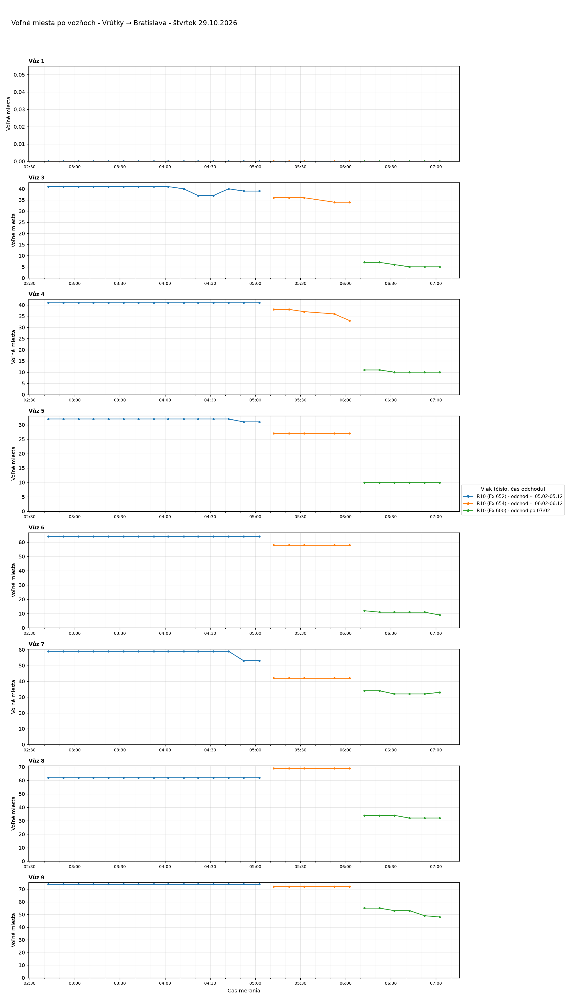

streda 28.10.2026

Bratislava → Košice
sobota 31.10.2026
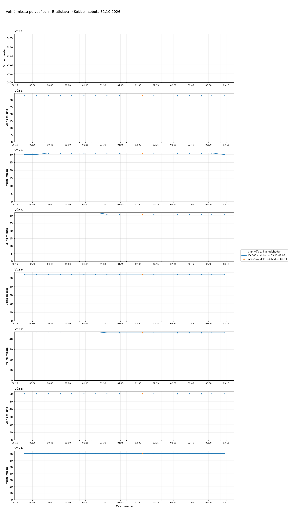

piatok 30.10.2026
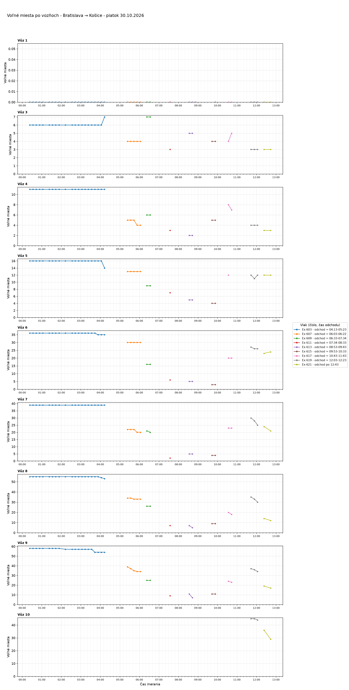

štvrtok 29.10.2026
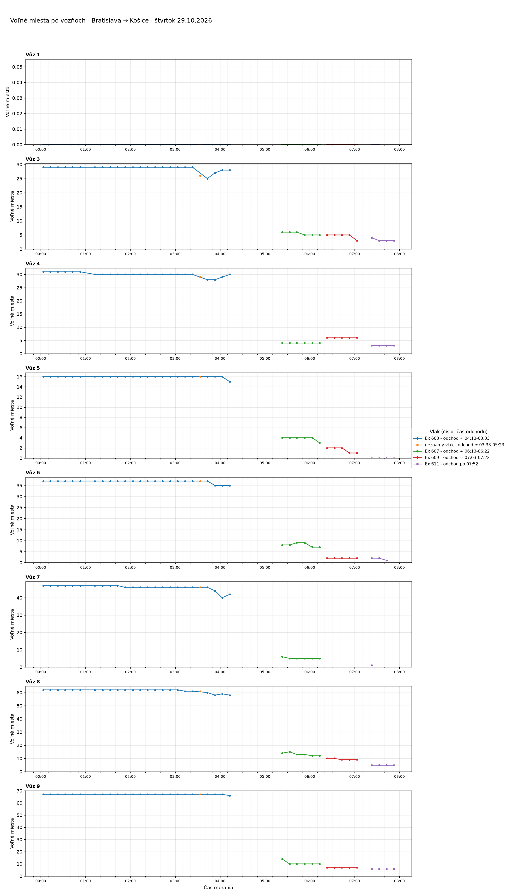

streda 28.10.2026

Košice → Bratislava
sobota 31.10.2026
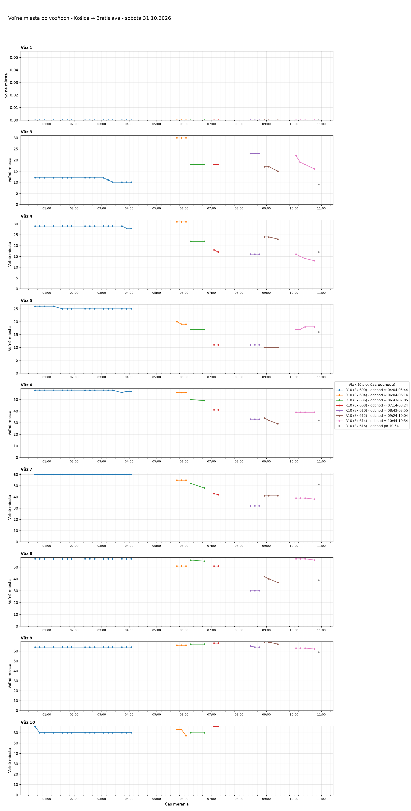

piatok 30.10.2026
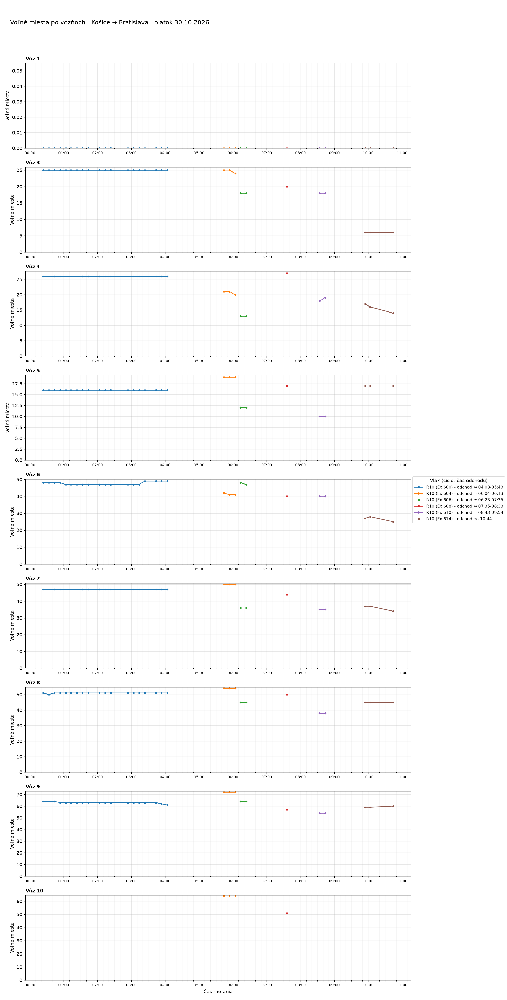

štvrtok 29.10.2026
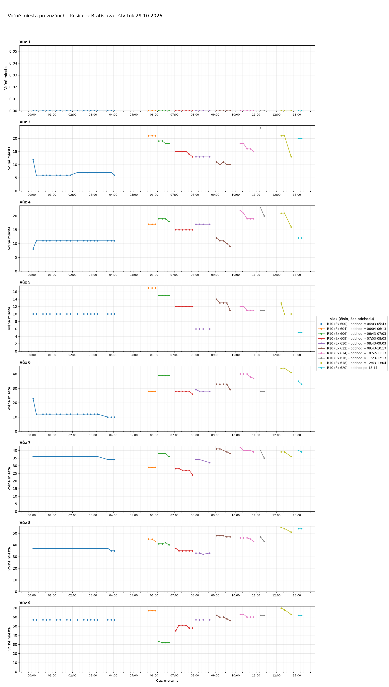

streda 28.10.2026